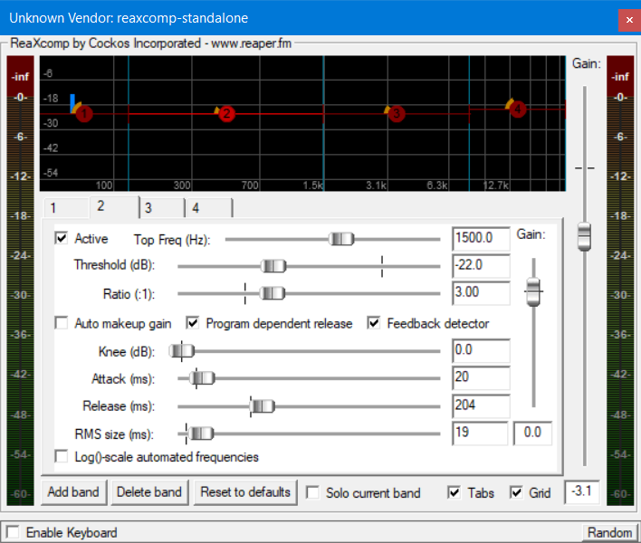
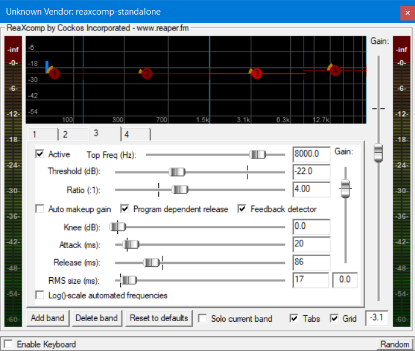
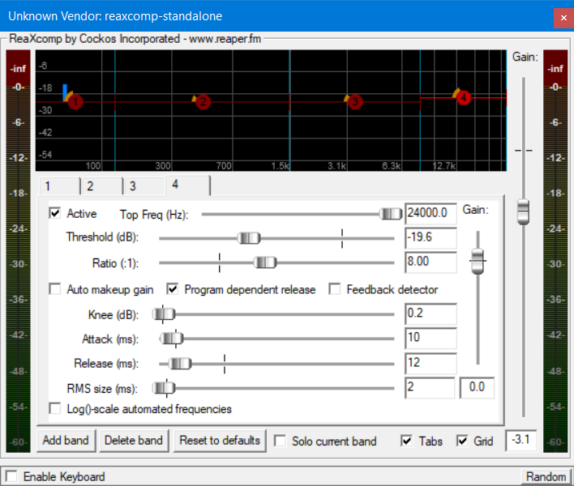
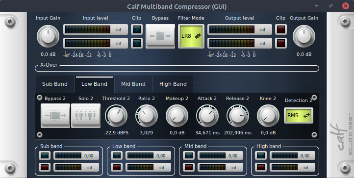
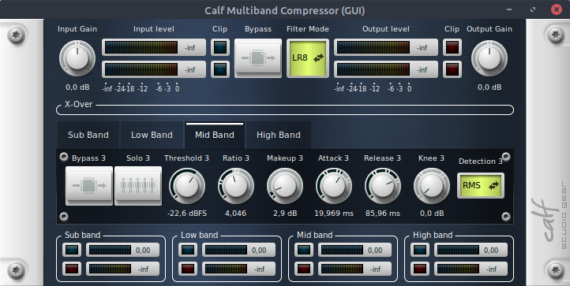
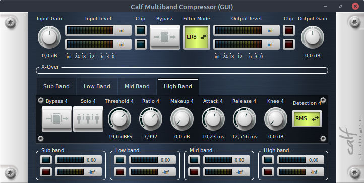
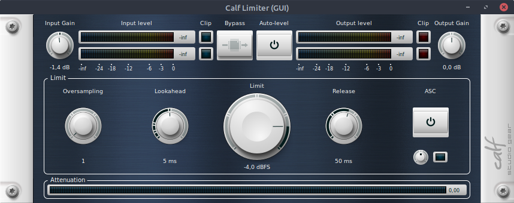

Mixing is an essential part in music production - it obviously manages to balance audio clips to its right volume so in the end, the whole song sounds well balanced. On this page, I want to share my ways of mixing and what I have learned over all these years.
At the moment, my master chain consists of an EQ, a limiter and a Multiband Compressor. Around Janury 2021, I aimed for a stronger low end with a decent amount of highs and a softer mid range area. Especially in heavier genres like metal and dubstep, bass can make the change being heavy or not.
You can recreate my chain easily on Windows or Linux. On Windows I use ReaPlugins, which you can download for free here. On Linux, I use Calf plugins, powered by Carla from the KX repositories.
On Windows you just need to download the free ReaPlugins. If you install it with the basic settings, it is going to be installed into C:\Programs\VSTplugins\
The other ReaXComp band settings:
  These are my settings. A Multiband splits usually 3 or more parts of the whole frequency spectrum, where you can now control the compression of this area. This is what really enhances, for example, bass in your songs - not (only) an EQ. (This is what they do when you stumble across "Bass Bosted" on Youtube for your favourite bass song.).
I use these settings for longer now and they are perfect. But please note that this can vary from style to arrangement; it could be That this mastering chain does not sound any good for your song. Here are my settings: If you have your own mutliband compression, they should have similar options:
| Band | Top Freq(Hz) | Threshold (dB) | Ratio (:1) | Knee (dB) | Attack (ms) | Release (ms) | Auto makeup gain |
|---|---|---|---|---|---|---|---|
| 1: Sub | 128 | -22 | 10 | 0 | 34 | 204 | ✓ |
| 2: Low-Mid | 1500 | -22 | 3 | 0 | 20 | 204 | |
| 3: High-Mid | 8000 | -22 | 4 | 0 | 20 | 86 | |
| 4: Treble | 24000 | -19,6 | 8 | 0,2 | 10 | 12 |
KX repositories are basically a collection of free and opensource audio plugins and applications. This repo is neither enabled by default nor are (most of) the plugins available on the offical servers from Ubuntu.
If you run a debian based Linux distrobution like Linux Mint or Ubuntu, just go the KX repositories link and execute the 4 commands being shown on that site.
After that, you might want to run another time sudo apt update if the next step is not working. The update function updates the new added repo.
Then you can go to the KX Plugins page, where you see a list of all plugins, you can download!
Doing that is very simple: You just need the package(s) name you want to try and type
sudo apt install PACKAGENAME //example
sudo apt install carla calf-plugins
This is going to download Carla + Calf plugins that I use. Of course you can check out all the other cool plugins there as well as audio applications if you so wish. vitalum-vst is my new go-to synthesizer on Linux, I highly recommend installing it too! Carla is the plugin host, that you are going to need to run more plugins in Linux. It helps handling all the plugin formats if your DAW does not support it natively. My DAW of choice is Renoise at the moment. It supports LADSPA format but not LV2. If your DAW does support it, you probably won't need Carla.
The settings here are similar but not exact the same. However, this is both my alternative chain as well as my standard-goto chain on Linux. As you can see in the picture, here you are not able to adjust the areas for example. They are predefined by Calf itself, which does not mean any bad. I just personally had to adjust these settings.
| Band | Threshold (dB) | Ratio (:1) | Makeup (dB) | Attack (ms) | Release (ms) |
|---|---|---|---|---|---|
| Sub Band: | -18,4 | 10,011 | 7,9 | 34 | 204,988 |
| Low Band: | -22,9 | 3,029 | 0 | 34,671 | 203 |
| Mid Band: | -22,6 | 4,04 | 2,9 | 19,969 | 85,96 |
| High Band: | -19,6 | 8 | 0 | 10,23 | 12,556 |
The other Calf Multiband band settings:
  As addition, I also like to put Calf Limiter before the multiband compression. This step is not needed but I do it because the whole routing in Renoise feels a bit different and I have more control over the dynamics.
When I start a new fresh song, I generally start sorting the tracks a bit. I always start with the drums, which are seperated into more drum tracks:
- Dubstep /E Drum (usually drum and snare only)
- Percussion 1 (Hi hats, Claps, Crashes)
- Percussion 2 (usually I load up here "Damage" from Kontakt, general percussion + (FX) Foleys
- Acoustic Drum Set (TMDK - free Metal Drumkit)
- Sidechain Group (every following is inside this group)
- Guitar 1 + Guitar 2 (each has its own cab but the same amp)
- Bass + Sub (bass being a real bass guitar while sub mostly being a static sine tone or dense attack)
- Dubstep Growls Track
- Trumpet/Synth Leads (additionally with a distortion)
- Strings, Pads
- Other synths
- Other Instruments
- Low Pass Filter Track
- Effects like White Noise, SFX and more
Mixing guitar is always a tricky topic. I tend to use the lows to make space for the bass guitar not removing all lows will also sound less heavier. It's always a matter of small Hz which makes the difference. There is not really a standard setting, I always rely on for the EQ but around 400-500Hz is, where I lower the bass. However, it depends, in my opinion, always on the song. My bass I currently use, is the Kraken VST, which has a crunchy sounding. I noticed this helps a lot supporting the guitar tone. Enhancing this with an EQ helps too. If I feel like, the bass needs more low end, I either use a normal EQ as well or I take a gainer, who just pushes volume and slightly distort the sound. I prefer not to push too much of the low level as a bass is already a bass.
When I have my tones, I add another guitar to add stereo width. I usually have everything in mono for a "tighter" sound but the second guitar plays the same riff with the same amp model only with just another cab. Note that even if you copy your rhythm guitar track, this still can get phasing issues, which does not sound good unless you want to achieve that sound in the first place.
When the guitar tone is properly set, I start off with the electronic dubstep. I usually tend to use strong kicks and nasty snares, that are super loud. I personally prefer that the raw samples are already strong enough so I do not need no more mixing on that. In very rare cases, I add a compressor on this track to bring both on a same level. But depending on how the sidechain is set up, this is mostly not needed
This track also triggers the sidechain, which is pretty much important, if you work with strong electronic drums. In
the case of Renoise, sidechaining is pretty simple:
- Signal Follower on EDrum Track
- Hydra (the Makro FX) on Group track for Sidechain
- Prefered volume plugin on Group track for Sidechain (in my case: Gainer)
The signal follower indeed needs a small tweak before using. The standard setting would mute the sidechain all the time and opens the gate when drums are playing. We want to have it exactly vice versa. But before let's take a look on Hydra:
When this is done, let's now take a look at how the Signal Follower should be set up:
The Dest Min. means the "off" state, so when nothing is playing. This should be in the middle at 50% right? If you would make it 100%, then the gainer would be on 100% too, which causes clipping in hell. Dest Max. then adjusts the value where you want to go after your drums are playing. In this case, it needs to e on 0% - your volume/gain should lower whenever you play.
Now there are more interesting fine tune parameters, that I often change within a song. The Attack controls how fast your signal will be taken - in this case, I want the sidechain immediately lowering its volume, since my edrums are having a high transient. The release should have at least some miliseconds to go back to normal state. If you set the release as quick as your attack, this could create some unwanted clicky noises.
The sensitivy may not be in every signal follower chain but this can easily control on how strong the sidechain effect should affect the volume. In Renoise, being around 90% is light, 70% is mid-strong while down below is very strong and can "annoy" by creating this pumping effect. since my edrums are not getting any kind of compression, this would sound too strong, ending up having that raw kick your ears while sound is not getting back again quickly enough and trust me, this does not sound too good.
It's also pretty neat that you can specify the scaling, which controls a quicker reduce and longer release or the other way around. In some songs, this could sound more better than the other. There's no rule for that, just a matter of personal preference and, as I said, the song itself.
I explained this topic of my mixing chain and the side chain very detailed, as I noticed that this was the game changer, when I went from "classic" metal/rock mixing to metalstep mixing. EDM and dubstep has taught me plenty of new things in mixing that I said to myself: this is the perfect mix of my classic metal tone combining with dubstep elements and sounds. If you are not familiar with that genre, I hope I could bring you an insight of how I make my particular sound.
The rest is pretty straight forward. To cut through the mix, metal and especially synths, classic instruments need more gain, power, and exciting trebles. I mostly achieve that through distortion or Exciters beside an EQ, that should always remove the noisy low ends, since natural instruments are always being recorded (more or less good) with a microphone, which always brings a little hiss to the samples.
Trumpets are getting Reverb and Distortion from me. The thing I like mostly about good trumpet libraries are that they are super flexible in their sound. They can do staccato, chopped, growlish and many more sounds. Crystal clear recorded trumpets (I use Sessoin Horns Pro from Native Instruments) have a good balance of high ends, so they can easily cut through the mix of a wild metal arrangement. I can just relegate to my TF2 Final Remix album, which uses trumpets only to keep the TF2 vibe - all of them have no problem to shine in the mix. It was a lot of fun to use them, in particular with the articulations.
Strings and soft Pads are always getting Reverb, Delay, eventually Phaser/Flanger effects. The good thing is that they do not need to cut through, but they just need to be there. I prefer to remove the lows completely, while keeping a lot of mids and boost, as always, the highs. If I need more "appearance" from them, I prefer to put a stereo expander on the track, which increases the existance of them even more. Depending on the song, I put them sometimes outside or inside the sidechain. Inside the sidechain group can create a cool pumping affect too!
Dubstep growls are often very random in terms of sounds and design. This makes it hard to bring them all under the hood. I usually use a bandreject filter to remove the mids as personally, I think the sounds are matching better together, since different dubstep sounds tend to be heavy on certain frequencies. I know that growls often tend to be mid-heavy so a bandreject would do the opposite. But that's how I got to like it over the years. I rarely use a multiband compression too to adjust this inequality and still boost some parts of the spectrum. Also since growls are often very loud, a limiter is a duty most of the time. But this is just one approach - in my opinion, you can never really tell the best settings for each dubstep track - it depends on the song.